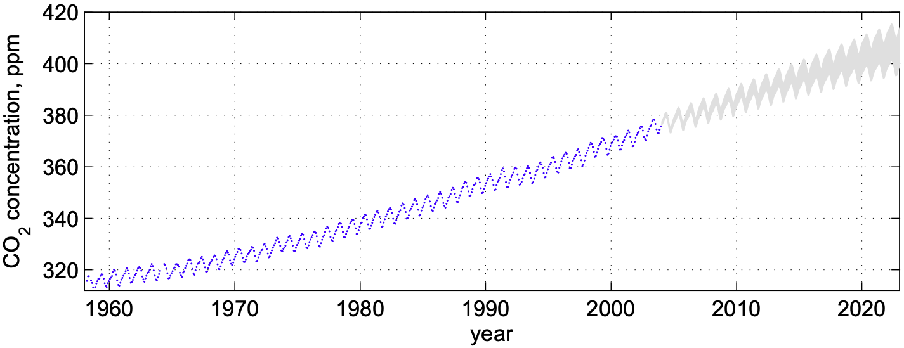
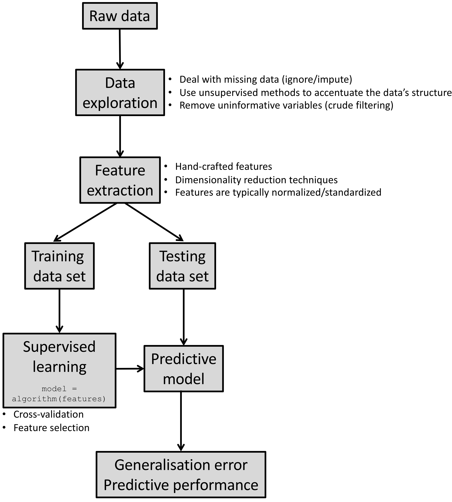

1 Introduction
1.1 Motivation
- Scientists are nowadays faced with an unprecedented amount of complex and big data sets (e.g. high-throughput sequencing, GIS (Geographical Information System) data, biomedical imaging and social media data).
- These data sets are very challenging to analyse due to nonlinear dependencies, mixed data sources and high-dimensionality.
- They often fail to conform to the assumptions of classical statistical methods.
- Hand-in-hand with the rise of computational power, machine learning (ML), has matured into a field of its own, to specificially extract knowledge from these data.
1.2 What is machine learning?
A machine (an algorithm/model) improves its performance (predictive accuracy) in achieving a task (e.g classifying the content of an image) from experience (data).
The automatic discovery of patterns and regularities in data.
1.3 What problems can machine learning solve?
Object recognition
Biomarker discovery in genomics
Navigation of autonomous vehicles
Fraud detection
… and much more!
1.4 Types of machine learning methods
Unsupervised learning
Unsupervised learning methods uncover structure in unlabelled data. Structure means patterns in the data that are sufficiently different from pure unstructured noise. Structure can be discovered by:
Determining the distribution of the data using density estimation techniques

Visualising the data after dimensionality reduction (e.g Principal Component Analysis (PCA))

Identifying groups of observations sharing similar attributes using clustering methods

Supervised learning
Akin to traditional statistical models (e.g generalised linear models) supervised learning methods discover the relationship between an outcome and a set of explanatory variables. Using training data, the model learns the mapping (predictive model) between a set of features and a:
Continuous outcome - regression 
Categorical variable - classification

Semi-supervised learning
Similar to supervised learning, however these methods also make use of unlabelled data to improve the model’s predictive performance.
Reinforcement learning
These methods mimic the way humans learn new games or skills (e.g riding a unicycle). The machine/model explores different actions that maximise a reward (e.g score achieved in a game or time spent upright on a unicyle) by a process of trial and error. There is an inherent tradeoff between exploration (trying out new actions) and exploitation (use actions that already give reasonable results).
In this introductory workshop we will only focus on unsupervised and supervised learning methods.
1.5 Statistics and Machine Learning
There is substantial overlap between the fields of statistics and machine learning. Some high-profile academics, such as Robert Tibshirani, even argue that ML is merely “glorified statistics”. He also provides a handy glossary.
We will not enter into a philosophical debate here, rather we focus on a pragmatic comparison between these two schools of thought, which evolved from different research areas and tackled different problems.
| Statistics | Machine learning | |
|---|---|---|
| Philosophy | provide humans with a set of data analysis tools | replace humans in the processing of data |
| Focus | what is the relationship between the data and the outcome? | how can we predict the outcome using the data? |
| Inference | how was the observed data generated? what do the model parameters mean in practice? | typically only care about predictions and not what the model parameters mean |
| Learning | use all of the observed data to perform inference at the population-level | use training data then use testing data to perfom individual-level predictions |
| Validation | measures of fit (\(R^2\), chi-square test, etc.) and suitability of inferred parameters | predictive performance measures (root mean squared error (RMSE), area under the ROC cuve (AUC), etc.) computed on “unseen” data (generalisation) |
| Model selection | adjusted measures of fit (adjusted \(R^2\), \(C_p\) statistic, Aikake information criterion, etc.) | Cross-validation and out-of-bag errors |
The line between ML and statistics is blurry at best. Personally, I do not find engaging in heated debates between the two fields to be healthy. Both fields complement each other and as the late Leo Breiman puts it:
The best solution could be an algorithmic model (machine learning), or maybe a data model, or maybe a combination. But the trick to being a scientist is to be open to using a wide variety of tools. - Leo Breiman
1.6 Terminology
The jargon used in ML can be daunting at first. The table below summarises the most commonly encountered terms and their synonyms:
| Training dataset | data used to train a set of machine learning models |
| Validation dataset | data used for model selection and validation i.e to choose a model which is complex enough to describe the data “well” but not more complex |
| Testing dataset | data not used when building the machine learning model, but used to evaluate the model’s performance on previously unseen data (generalisation error) |
| Features | the covariates/predictors/inputs/attributes used to train the model |
| Training error | the model’s performance evaluated on the training data (also known as in-sample or resubstitution error) |
| Testing error | the model’s performance evaluated on the testing data (also known as out-of-sample or generalisation error) |
1.7 A bird’s-eye view of building machine learning systems

Health warning: Real-life data is very messy. You will end up spending most of your time preparing your data into a format amenable for exploration/modelling. Do not despair, in this workshop you will be provided with clean data sets that can be used straightaway. Nevertheless, if you have not attended a course on data wrangling and visualisation yet, I would strongly recommend doing TJ McKinley’s course.